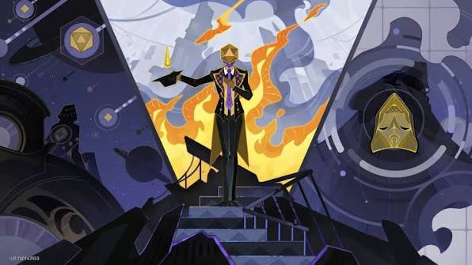

Algunos dicen que Asat Pramad es el más humano de los Señores Supremos , mientras que otros argumentan que es el menos. Rara vez se le ve en el frente de batalla; prefiere orquestar desde la distancia, más un maestro de ajedrez que un caudillo militar, moviendo sus legiones con precisión metódica. Los mundos que caen bajo su mirada son consumidos por oleadas de bromas lentas y crueles, como la infame caída del anillo de Ogul. Durante más de un siglo, Asat Pramad hizo avanzar a sus Voidrangers poco a poco, solo para forzar a la línea militar de la resistencia a adoptar la forma de una sola frase: «La destrucción es donde termina la risa. Es luto, no celebración». Conocido como el que destruye la euforia , Asat Pramad asume ese título con orgullo. Cuando termina su trabajo, graba a fuego un rostro sonriente gigante en la superficie de cada planeta muerto, como si se burlara de la mismísima idea de la vida.